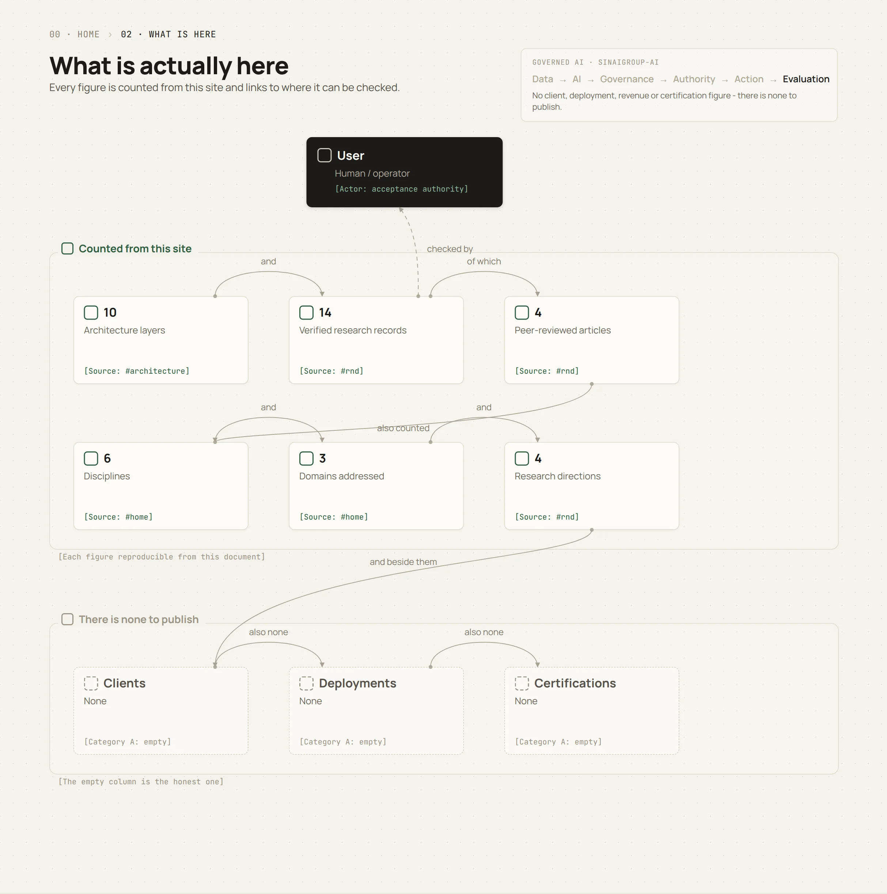
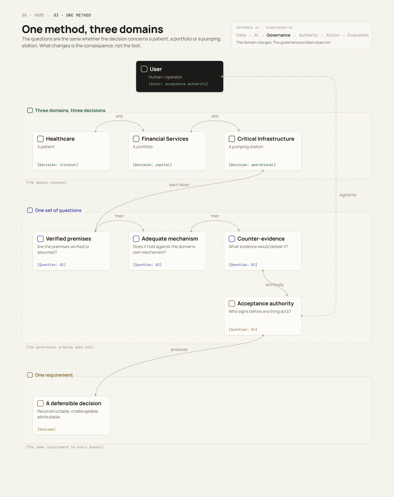
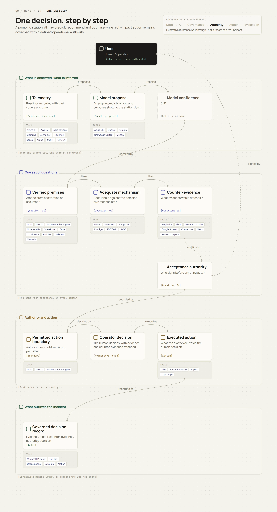
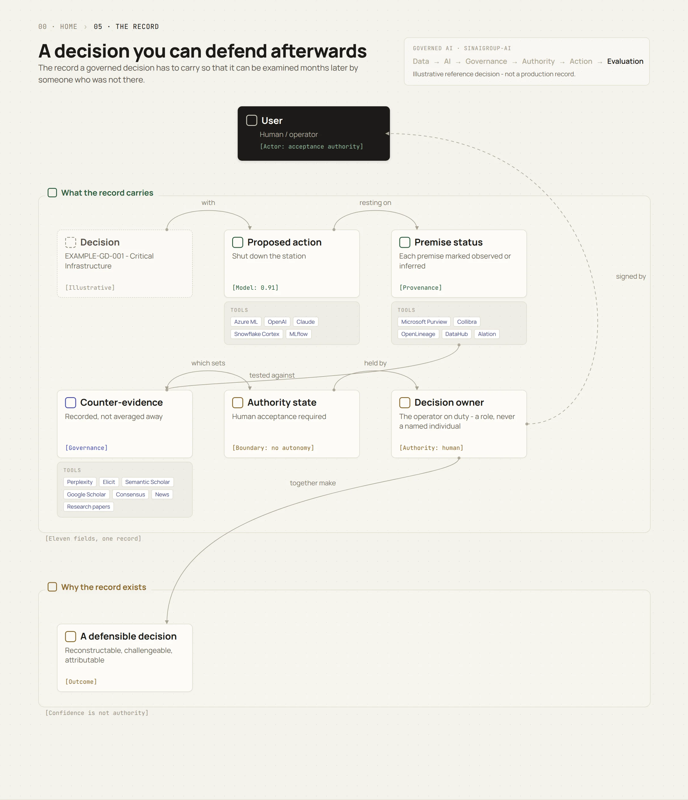
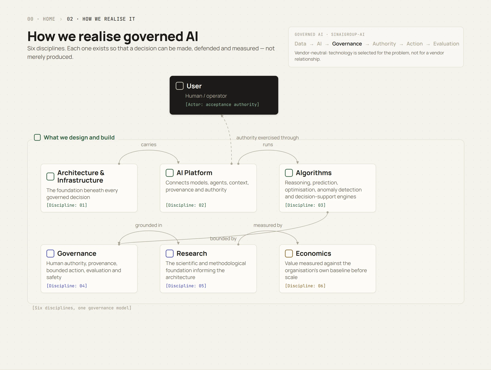
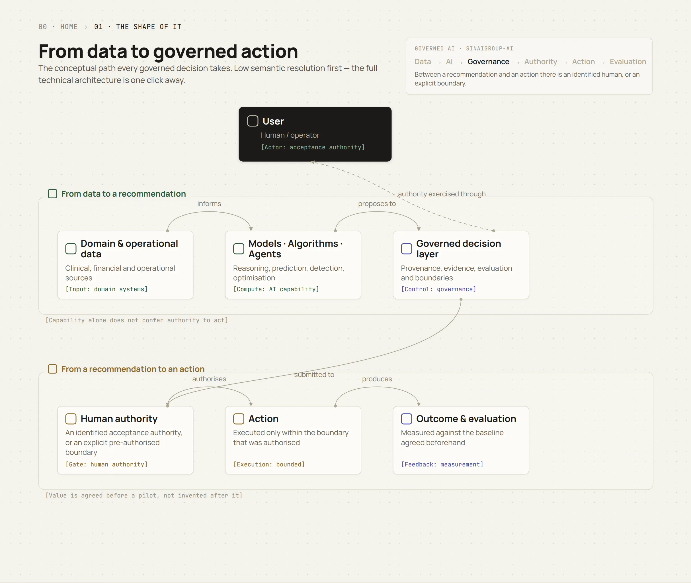

Governed AI for
high-stakes
regulated domains.
Healthcare. Financial Services. Critical Infrastructure.
We build AI systems where intelligence alone is not enough — decisions must be bounded, auditable and accountable.
Every figure on this site is
counted, not claimed
Counted from this document and reproducible from it. The second row is the one that matters: no clients, no deployments, no certifications, because there are none to publish.

Three high-stakes
domains
Three environments in which an AI decision may affect a patient, capital, regulatory obligations or an essential physical system.
Healthcare
Patient decisions. Clinical evidence. Human authority.
AI may support diagnosis, stratification, monitoring and clinical reasoning — but confidence is not clinical authority.
Explore Healthcare → 02 · Financial ServicesFinancial Services
Capital. Risk. Regulation. Accountability.
AI may identify risk, detect patterns and recommend financial action while decision authority, evidence and auditability remain explicit.
Explore Financial Services → 03 · Critical InfrastructureCritical Infrastructure
Physical systems. Essential services. Operational consequence.
AI may predict, recommend and optimise while high-impact action remains governed within defined operational authority.
Explore Critical Infrastructure →The domain changes.
The governance problem does not.
The questions are the same whether the decision concerns a patient, a portfolio or a pumping station. What changes is the consequence, not the test.

Are the premises verified or assumed?
Does the recommendation hold against the domain’s own mechanism, not merely against plausibility?
What evidence would defeat it?
Who signs before anything acts?
One decision,
step by step
A pumping station. From the first reading to the record that outlives it — and the point where model confidence stops and human authority begins.
Reference scenario — illustrative, not a deployment.

A decision you can
defend afterwards
What a governed decision has to carry so that it can be examined months later by someone who was not there.

Founder-led, by design
SINAIGROUP-AI is a founder-led AI architecture, platform engineering and advisory company focused on governed AI for high-stakes regulated domains.
We work across healthcare, financial services and critical infrastructure — three environments in which an AI decision may affect a patient, capital, regulatory obligations or an essential physical system.
Our work begins not only with what an AI system can do, but with what it should be permitted to do, under whose authority and on what evidence.
How we realise
governed AI

Architecture & InfrastructureAI PlatformAlgorithmsGovernanceResearchEconomics
From data to
governed action
The conceptual path every governed decision takes. Low resolution first — the detailed architecture is one click away.

Vendor-neutral
by design
We architect around an organisation's existing stack, integrate third-party technologies, and design and build the governed decision layer — provenance, acceptance authority and evaluation — on top of it.
Technology is selected for the problem, not for a vendor relationship.
The method is
written down
The governance concepts on this site — sound abduction, human acceptance authority, provenance, counter-evidence and agent robustness — are set out in a published record of peer-reviewed articles and preprints, led or co-authored by our CTO.
Preprints document active research. They are not peer-reviewed validation, and no publication here is evidence of a commercial product.
Senior people stay
on the work
Three founders, a network of domain specialists engaged per assignment, and a limited number of engagements at a time.
Senior people remain directly involved. Where a founder's experience predates SINAIGROUP-AI, it is presented as professional or research experience rather than as a company delivery.
Governed AI must produce
measurable value
What happens today?
What the current process costs or produces, established before anything is built.
What measurable outcome should change?
Agreed in advance, in the organisation's own units, not in generic percentages.
Did it change, and what was it worth?
Measured against the baseline after the pilot, including the cases where it did not.
Discuss a high-stakes
AI decision
Tell us what decision matters, what evidence it depends on, and what happens if it is wrong.
Start the conversation →